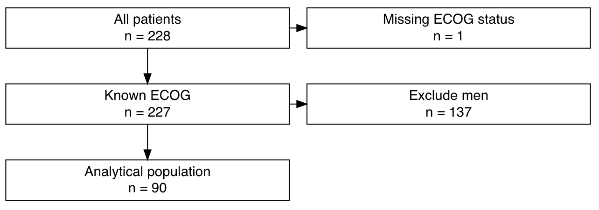

This function performs sequential, user-defined filter
steps on the input data set. It generates the filtered data and a tibble that
can be directly passed on to exclusion_flowchart to
plot a flowchart of exclusions.
make_exclusions(criteria, data)Tibble with filtering criteria. Must contain three variables:
left String with description of data before applying the filter.
right String with description of data after applying the filter.
filter Filtering expression quoted using expr.
The filter in the last row will not be executed, because the last row
serves as a description of the final data set. See examples.
Tibble with data set on which the filtering criteria should be applied.
A tibble. Each row is a filtering step. Variables:
left: Labels for included subset that is "left" after the filter.
right: Labels for excluded subset (which
exclusion_flowchart plots to the right).
included The data before applying the row's filter.
excluded The data after applying the row's filter.
n_left Number of observations before applying the row's filter.
n_right Number of observations after applying the row's filter.
The last row, included, contains the data after applying all filters.
Access this tibble using %>% pull(included) %>% last().

# Example data set
data(cancer, package = "survival")
cancer <- cancer %>% tibble::as_tibble()
cancer
#> # A tibble: 228 × 10
#> inst time status age sex ph.ecog ph.karno pat.karno meal.cal wt.loss
#> <dbl> <dbl> <dbl> <dbl> <dbl> <dbl> <dbl> <dbl> <dbl> <dbl>
#> 1 3 306 2 74 1 1 90 100 1175 NA
#> 2 3 455 2 68 1 0 90 90 1225 15
#> 3 3 1010 1 56 1 0 90 90 NA 15
#> 4 5 210 2 57 1 1 90 60 1150 11
#> 5 1 883 2 60 1 0 100 90 NA 0
#> 6 12 1022 1 74 1 1 50 80 513 0
#> 7 7 310 2 68 2 2 70 60 384 10
#> 8 11 361 2 71 2 2 60 80 538 1
#> 9 1 218 2 53 1 1 70 80 825 16
#> 10 7 166 2 61 1 2 70 70 271 34
#> # ℹ 218 more rows
# Define exclusion criteria
criteria <- tibble::tribble(
~left, ~right, ~filter,
"All patients", "Missing ECOG status", expr(!is.na(ph.ecog)),
"Known ECOG", "Exclude men", expr(sex == 2),
"Analytical population", "", expr(TRUE))
# Alternative, equivalent approach to defining the criteria
# Note the use of list() around expr(...)
criteria <- dplyr::bind_rows(
tibble::tibble(
left = "All patients",
right = "Missing ECOG status",
filter = list(expr(!is.na(ph.ecog)))),
tibble::tibble(
left = "Known ECOG",
right = "Exclude men",
filter = list(expr(sex == 2))),
tibble::tibble(
left = "Analytical population",
right = "",
filter = list(expr(TRUE))))
# Perform sequential exclusions
result <- make_exclusions(
criteria = criteria,
data = cancer)
# Show results
result
#> # A tibble: 3 × 7
#> left right filter included excluded n_left n_right
#> <chr> <chr> <list> <list> <list> <int> <int>
#> 1 All patients "Missing EC… <language> <tibble> <tibble> 228 1
#> 2 Known ECOG "Exclude me… <language> <tibble> <tibble> 227 137
#> 3 Analytical population "" <lgl [1]> <tibble> <tibble> 90 NA
# Access study population after all exclusions
result %>%
dplyr::pull(included) %>%
dplyr::last()
#> # A tibble: 90 × 10
#> inst time status age sex ph.ecog ph.karno pat.karno meal.cal wt.loss
#> <dbl> <dbl> <dbl> <dbl> <dbl> <dbl> <dbl> <dbl> <dbl> <dbl>
#> 1 7 310 2 68 2 2 70 60 384 10
#> 2 11 361 2 71 2 2 60 80 538 1
#> 3 16 654 2 68 2 2 70 70 NA 23
#> 4 11 728 2 68 2 1 90 90 NA 5
#> 5 1 61 2 56 2 2 60 60 238 10
#> 6 6 81 2 49 2 0 100 70 1175 -8
#> 7 12 520 2 70 2 1 90 80 825 6
#> 8 12 473 2 69 2 1 90 90 1025 -1
#> 9 16 107 2 60 2 2 50 60 925 -15
#> 10 1 122 2 62 2 2 50 50 1025 NA
#> # ℹ 80 more rows
# Plot flow chart of exclusions (might not display in the online reference)
result %>%
exclusion_flowchart()